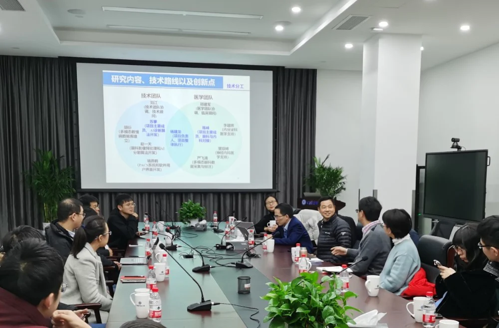
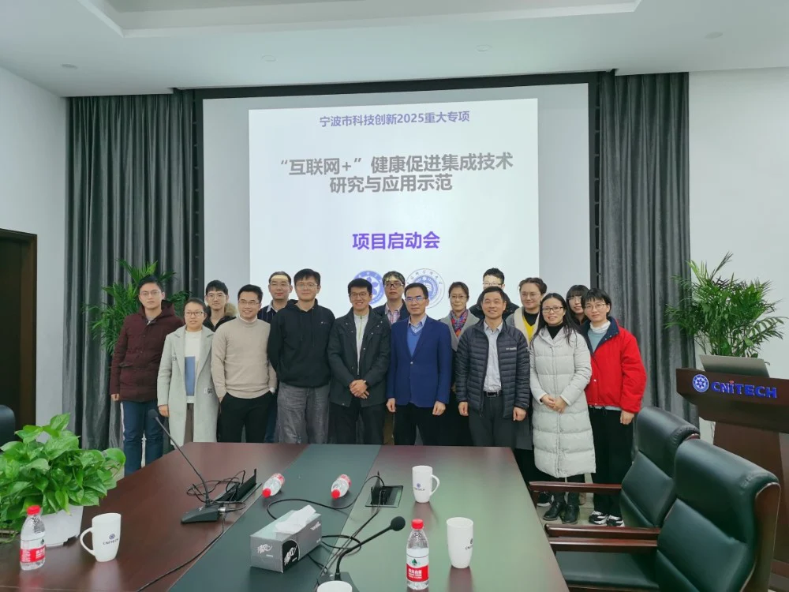

2020年1月17日下午，宁波市科技创新 2025 重大专项“‘互联网+’健康促进集成技术研究与应用示范”项目启动会在中科院宁波材料所学思会议室顺利召开。中科院大学宁波华美医院书记郑建军、眼科主任陈峰，中科院宁波材料所所属慈溪医工所智能医学影像团队（iMED）首席科学家刘江博士、团队负责人赵一天博士等多位专家参会。
该项目由iMED团队杨建龙博士牵头，联合中科院大学宁波华美医院共同获批经费300万元。启动会首先由杨建龙博士对项目的情况进行了详细的介绍，随后与参会人员对项目的实施计划进行了充分地讨论。在课题协调、技术创新、项目进度等方面达成共识，为项目的实施与推进奠定了坚实基础。

项目针对目前国家对慢性病防治的迫切需求，立足于人工智能科技前沿，基于慢性病与眼部病变的密切联系，提出发展服务于临床的慢性病辅助诊断管理平台。项目的成功实施将有助于糖尿病、高血压、老年痴呆等慢性病的早发现、精准诊断和早治疗。项目采用“科研院所+医院”的合作模式，旨在形成规范化服务技术解决方案，预期项目研究成果能够在合作医院得到充分的优化和完善，有潜力进一步推广至全国，服务于全社会。
